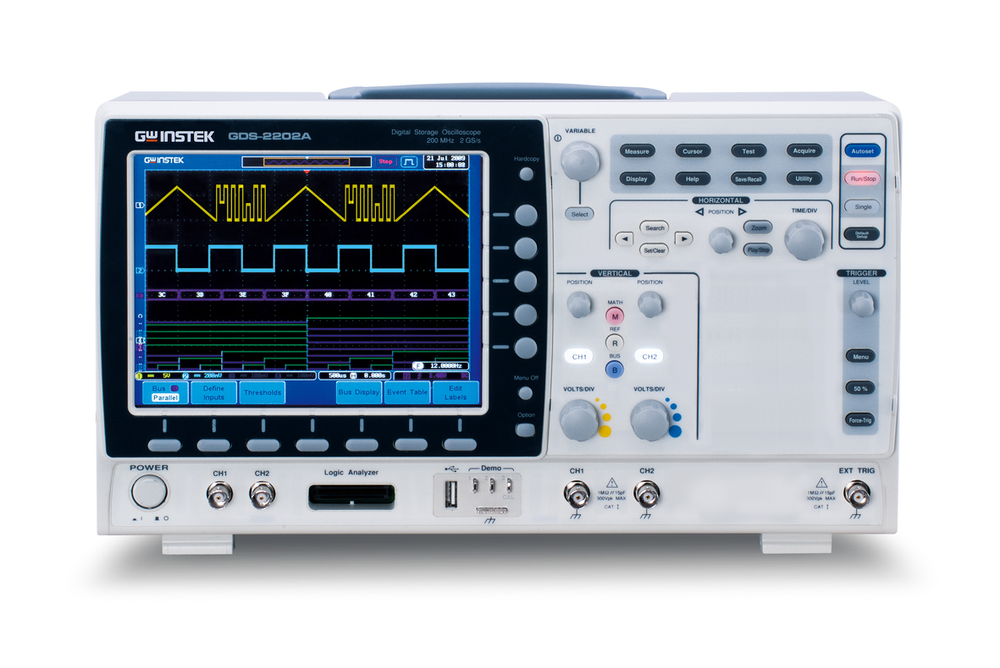
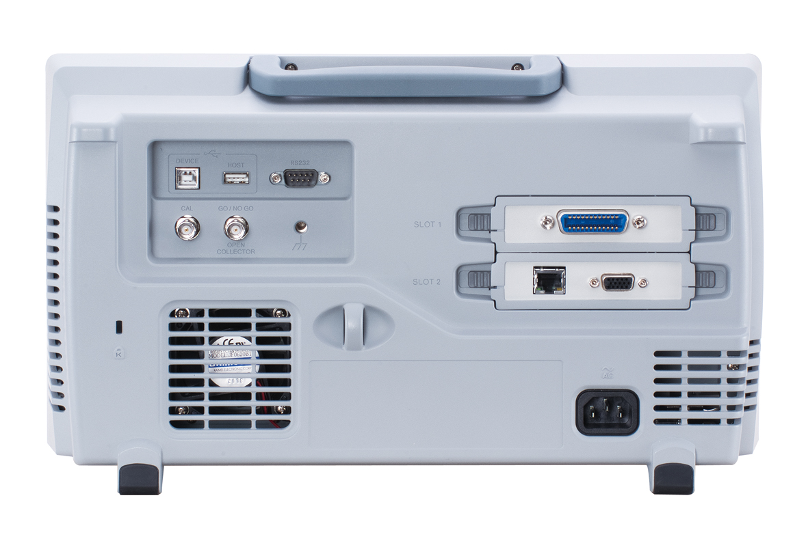

1. רקע כללי וטכנולוגי
מהו אוסילוסקופ (משקף תנודות)?
אוסילוסקופ הוא מכשיר המדידה המרכזי והחשוב ביותר במעבדת זרם חילופין (AC). תפקידו הראשי הוא להציג ולנתח אותות מתח חשמליים המשתנים בזמן, על גבי מסך המציג מערכת צירים (מתח בציר ה-Y האנכי וזמן בציר ה-X האופקי). למכשיר שני ערוצי מדידה נפרדים (\( CH1 \) ו-\( CH2 \)) המאפשרים להציג ולהשוות שני אותות בו-זמנית.
מפרט טכני של ה-GDS-2072A
ה-GDS-2072A הוא אוסילוסקופ דיגיטלי (DSO) מתקדם ממשפחת ה-Visual Persistence של חברת GW Instek. הוא מתאפיין ברוחב פס (Bandwidth) של \( 70\text{ MHz} \), בקצב דגימה בזמן אמת של עד \( 2\text{ GSa/s} \), ובעומק זיכרון של \( 2\text{M} \) נקודות המאפשר לכידה של אותות מהירים ברזולוציה גבוהה לאורך זמן.


2. אזהרת בטיחות קריטית - מגבלת האדמה המשותפת
- איסור חיבור אדמות בנקודות שונות: אין לחבר את תנין האדמה (השחור) של ערוץ 1 לנקודה אחת במעגל, ואת תנין האדמה של ערוץ 2 לנקודה אחרת בעלת פוטנציאל שונה. הדבר ייצור קצר מוחלט בין שתי הנקודות הללו דרך האדמה המשותפת של האוסילוסקופ, מה שישרוף רכיבים במעגל או את הסקופ עצמו.
- מדידת מתח צף: לעולם אל תחברו תנין אדמה לנקודה "חמה" (שאינה אדמת המקור). תנין האדמה חייב תמיד להתחבר אך ורק לאדמה המשותפת של המעגל (הפוטנציאל הנמוך ביותר).
3. פירוט אזורי הבקרה בלוח הקדמי
לוח ההפעלה מחולק לארבעה אזורים פונקציונליים ברורים המאפשרים שליטה מלאה בתצוגה ובאות הנמדד:

איור 3: מיפוי פונקציונלי של לוח ההפעלה של ה-GDS-2072A
1. בקרות אנכיות (Vertical) - ציר המתח (ציר Y)
מערכת זו שולטת בנפרד על כל אחד מערוצי המדידה:
- מקשי CH1 / CH2: לחיצה עליהם פותחת על גבי המסך את תפריט הערוץ המאפשר הגדרת צימוד (Coupling: AC/DC/GND), הגבלת רוחב פס (Bandwidth Limit), והגדרת פרוב (Probe attenuation: x1/x10).
- בורר Volts/Div (משרעת): משנה את הרגישות האנכית של הערוץ (כמה וולט מייצגת כל משבצת אנכית במסך). כוונון נכון מותח את האות על פני רוב גובה המסך לקבלת רזולוציית מדידה מירבית.
- בורר Position (מיקום אנכי): מזיז את האות למעלה או למטה ביחס לקו האפס (GND), המיוצג על ידי חץ קטן בצד המסך עם מספר הערוץ.
2. בקרות אופקיות (Horizontal) - ציר הזמן (ציר X)
מערכת זו משותפת לשני הערוצים ושולטת על בסיס הזמן (Timebase):
- בורר Time/Div (בסיס זמן): משנה את מהירות הסריקה האופקית (כמה זמן מייצגת כל משבצת אופקית במסך). מאפשר להרחיב או לכווץ את הגל כדי לראות מספר מחזורים רצוי על גבי המסך.
- בורר Position (מיקום אופקי): מזיז את האות ימינה או שמאלה. לחיצה עליו מאפסת את האות למרכז המסך.
- Zoom: לחצן לחלוקת המסך המציג תצוגה מוגדלת של מקטע ספציפי של הגל.
3. בקרות סנכרון וטריגר (Trigger) - ייצוב התמונה
מערכת הטריגר אחראית לקבוע את נקודת ההתחלה של ציור האות על המסך, ומאפשרת לקבל תמונה יציבה וקבועה של אות מתחלף מהיר:
- בורר Level (רמת טריגר): קובע את מתח הייחוס שבו יתחיל הציור. יש לסובב בורר זה עד שקו הייחוס האופקי של הטריגר יחתוך את אות המוצא על המסך.
- מקש Menu (תפריט טריגר): מאפשר לבחור את מקור הסנכרון (CH1, CH2 או מקור חיצוני), את סוג הטריגר (עליית מדרגה - Edge, רוחב פולס - Pulse ועוד), ואת כיוון עליית האות (Slope: עלייה או ירידה).
- Force: לחיצה על לחצן זה מאלצת את המכשיר לבצע דגימה מיידית גם אם תנאי הטריגר לא התקיימו (שימושי לאיתור אותות רעש או מתחי DC קבועים).
4. פונקציות מתמטיות, מדידה אוטומטית וסמנים (Math & Measure)
פונקציות מובנות המקלות על ניתוח האותות מבלי לספור משבצות ידנית:
- Measure (מדידות אוטומטיות): מציג מעל 30 סוגי מדידות בזמן אמת, כגון: \( V_{pp} \) (פסגה לפסגה), \( V_{rms} \) (ערך אפקטיבי), תדר (Frequency), זמן מחזור (Period), מחזור עבודה (Duty Cycle) ועוד.
- Cursors (סמנים): הפעלת שני סרגלים (סמני זמן או סמני מתח) אותם ניתן להזיז ידנית כדי למדוד במדויק את הפרש המתח (\( \Delta V \)) או הפרש הזמן (\( \Delta t \)) בין שתי נקודות נבחרות על גבי האות.
- MATH (מתמטיקה): ביצוע פעולות חשבוניות בין הערוצים (\( CH1+CH2 \), \( CH1-CH2 \)), כפל, חילוק, וכן אנליזת תדר מבוססת התמרת פורייה מהירה (FFT).
4. הדגמות מעשיות ומדריכי ניסוי (שלב-אחר-שלב)
לחצו על כל אחת מההדגמות המעשיות להלן כדי לראות את שלבי העבודה המדויקים במעבדה:
5. מצבי פעולה מתקדמים של האוסילוסקופ
מעבר לפונקציות הבסיסיות, היכרות עם מצבי הפעולה הבאים תסייע לכם לפתור בעיות מורכבות יותר במעבדה:
א. צימוד כניסה (Input Coupling: AC / DC / GND)
צימוד הכניסה קובע כיצד האות החשמלי עובר מהפרוב אל מערכת ההגברה והדגימה של הסקופ:
ב. מצבי סריקת טריגר (Trigger Sweep Modes: Auto / Normal / Single)
מצבים אלו קובעים כיצד האוסילוסקופ מעדכן את המסך בתגובה לקיומו או אי-קיומו של טריגר:
- Auto Mode (מצב אוטומטי): האוסילוסקופ מעדכן את התצוגה באופן רציף. אם קיים טריגר, הגל מיוצב. אם אין טריגר, המכשיר מייצר סריקה פנימית עצמית ומציג אות לא מסונכרן.
מתי להשתמש? לחיפוש אותות ראשוני, למדידת מתח ישר (DC) קבוע, או כאשר לא בטוחים לגבי צורת האות. - Normal Mode (מצב רגיל): האוסילוסקופ מעדכן את התצוגה רק כאשר מתקיים תנאי הטריגר. אם התנאי אינו מתקיים, המסך מציג את הדגימה האחרונה שנקלטה וקופא.
מתי להשתמש? כאשר עובדים עם אותות בתדירות נמוכה מאוד, או כאשר רוצים למנוע מהמסך להשתבש כאשר האות נעלם זמנית. - Single Mode (סריקה בודדת): המכשיר ממתין בדרגת כוננות לטריגר הראשון שמתרחש. ברגע שהאות עובר את סף הטריגר, המכשיר מבצע דגימה בודדת, קופא מיד על המסך ועובר למצב Stop.
מתי להשתמש? ללכידת תופעות מעבר חד-פעמיות (Transient), כגון טעינת קבל במעגל RC ברגע סגירת המפסק, או פולס תקשורת בודד.
ג. מצבי רכישת נתונים (Acquisition Modes)
באמצעות מקש Acquire ניתן לשנות את אופן עיבוד הדגימות האנלוגיות:
- Sample (דגימה רגילה): המכשיר דוגם בפרקי זמן קבועים ומציג אותם. מתאים לרוב המדידות.
- Average (מיצוע): מצעצע מספר סריקות קודמות (ניתן להגדיר בין 2 ל-256). מצב זה מסנן רעשים אקראיים מהאות ומציג גל סינוס נקי וחלק לחלוטין.
- Peak Detect (גילוי שיא): דוגם במהירות מירבית ומחפש ערכי קיצון. שימושי לגילוי "גליצ'ים" (Glitches) או רעשים מהירים מאוד שעלולים ללכת לאיבוד במצב דגימה רגיל.
ד. הגבלת רוחב פס (20MHz Bandwidth Limit)
כאשר מודדים אותות בתדר נמוך (למשל \( 1\text{ kHz} \)), האוסילוסקופ קולט רעשי רקע בתדרים גבוהים שמקורם בסביבה. הפעלת האופציה 20MHz BW Limit בתפריט הערוץ חוסמת את כל התדרים שמעל \( 20\text{ MHz} \), מסננת רעשי קרינה ומעניקה תצוגת גל נקייה ויציבה בהרבה.
6. צ'קליסט פתרון בעיות מהיר לסטודנט
נתקלתם בבעיה במהלך המדידה במעבדה? בדקו את הטבלה הבאה לפתרון מהיר:
7. טיפים מעשיים של זהב למדידה נכונה בסקופ
8. סרטוני הדרכה והדגמה מעשיים
לפניכם סרטוני הדרכה שימושיים ב-YouTube לעבודה נכונה עם האוסילוסקופ:
-
▶️ המדריך המלא והפופולרי לשימוש באוסילוסקופ (EEVblog #279):
מדריך יסודי ומקיף של Dave Jones המסביר את כל פונקציות האוסילוסקופ, מהו בסיס זמן, כיצד עובד מנגנון הטריגר ואיך לקרוא גלים בצורה נכונה.
צפייה בסרטון ההדרכה ב-YouTube ← -
▶️ מלכודות מדידה ועבודה מול מחולל אותות (EEVblog #652):
סרטון חובה להבנת השפעת התנגדות פנימית (\( 50\,\Omega \)), החזרות אות ותיאום עכבות בעבודה מול סקופ.
צפייה בסרטון ההסבר ב-YouTube ← -
▶️ חיפוש סרטוני הדרכה ממוקדים לסדרת GW Instek GDS-2000A:
חיפוש מותאם ביוטיוב למציאת מדריכי וידאו ספציפיים עבור סדרת האוסילוסקופים הזו (הגדרות מתקדמות, שמירת קבצים, Trigger מורכב).
למעבר לתוצאות החיפוש ב-YouTube ←